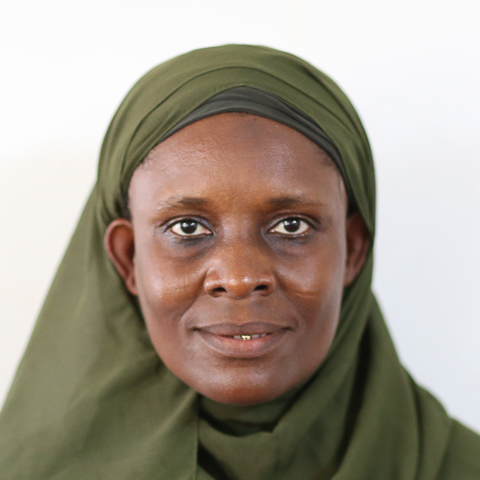

Dr. (Mrs.) Alimatu - Saadia Yussiff is a Senior Lecturer in the Department of Computer Science and Information Technology, University of Cape Coast.
She has taught relevant courses in the department, and assumed responsibilities of regular university lecturer including examination officer, registration officer and academic advisor.
She is a dedicated, professional and accomplished lecturer with knowledge of teaching computer science and Information Technology courses.
| DEGREE | SCHOOL |
|---|---|
| Doctor of Philosophy in Information Technology | Universiti Teknologi PETRONAS, 2016 |
| Master of Science in Information Technology | South Western Research Station, 2005 |
| Bachelor of Arts in Integrated Development Studies | University for Development Studies, 2000 |
To know more about Dr. Alimatu-Saadia Yussiff, Click the link below
Dr. Alimatu-Saadia Lateef Website